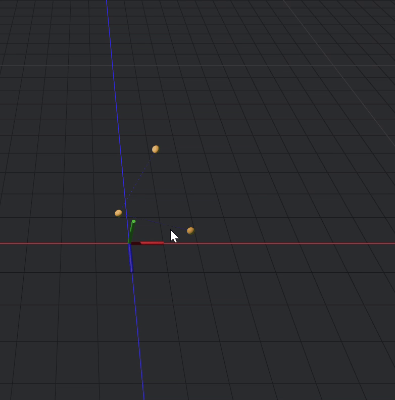
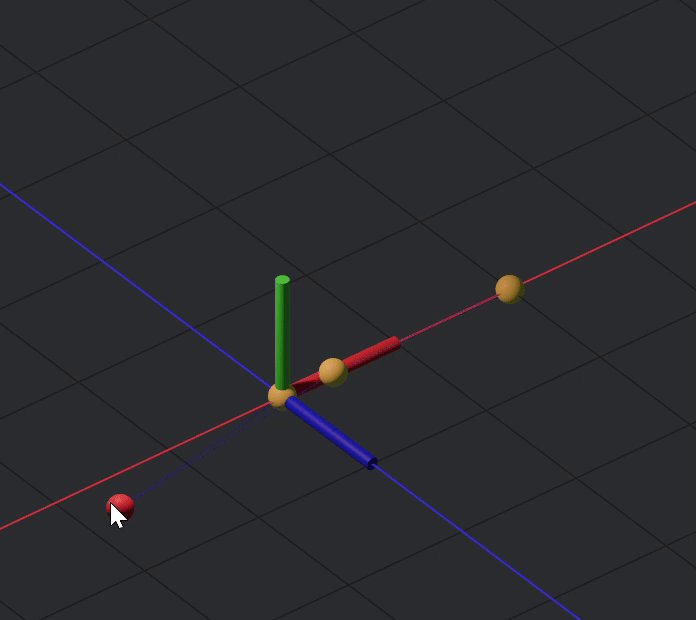
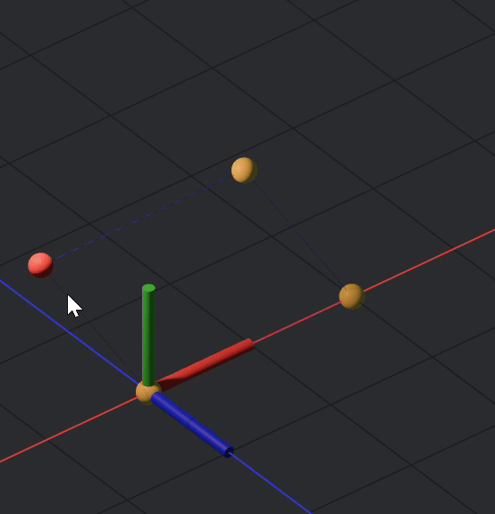

Getting started with Ugoku
What is Ugoku?
Ugoku is a simulation tool that lets you model mechanical linkages via a scripting language. Initially the goal was OpenSCAD, but with movement. Rather than static 3d models, its defining a system more or less.
How to access Ugoku?
Web
The simulator is live at ugoku.netlify.app/sim/ The main page (which is likely where you found this guide) is available at ugoku.netlify.app
Native
If you feel so inclined, building from source is an option, although the codebase is not very optimized, it will run just fine natively, and that will enable you to bring your own editor + also the benefit of not having to rely on web services.
The Ugoku Modelling Model
Ugoku's model for modelling has three main parts within an overarching simulation:
1 - Joints
Every simulation or mechanism built in Ugoku will contain this fundamental building block: Joints. It is safe to say that any purely mechanical system can be represented by a large set of points and the relationships between them.
In Ugoku, you can define joints under this grammar:
joint identifier(number, number)
joint identifier(number, number, number)joint a(0,2,0)
And in 3d:
joint b(0,0,2)
2 - Links
While joints serve as the points of connection, links serve as the connections. The links are the bones of the mechanical system.
You can define links with this grammar
link identifier(joint name, joint name)
A link can only be between two joints, but there is no limit to the amount of links a joint can be connected to.
Note
Most constraints are between joints, and it is quite rare for a constraint to mess with links at all. Links are almost entirely visual representations of the relationships. Constraints should be the relationship between joints, and NOT links.
3 - Constraints
Constraints are the rules of the mechanism, they should always be applied to joints, as joints are the connections, there are various constraints and the syntax + usage is available on the docs
Your First Simulation
To get started modelling with Ugoku, we will construct a fourbar linkage, constructing this linkage will require us to:
- Define a simulation container
- Define four points
- Define four links
- Constraint distance between these four points
- Constraint two of them into a fixed position
- And optionally constrain them to a plane, and also restrict angular movement
Step 0
Visit the simulator at ugoku.netlify.app/sim/, and then navigate to the text input labeled "Ugoku!" There is where all editing will be done, and that is where you can input your code.
Step 1 - Define your sim container
This container will hold the contents of your simulation
sim fourbar{ ... }
Step 2 - define joints
A fourbar linkage is a square, so we need four points in order to define the basis of the four bar
sim fourbar{
joint a(0,0)
joint b(0,2)
joint c(2,2)
joint d(2,0)
}When compiled it will look like this:
Step 3 - define links
Before doing this step, it is important to state that due to the nature of constraints being applied to joints and links, links serve as a mostly visual guide. Regardless, you should use them.
The links are as such:
sim fourbar{
joint a(0,0)
joint b(0,2)
joint c(2,2)
joint d(2,0)
link ab(a,b)
link bc(b,c)
link cd(c,d)
link da(d,a)
}There is no limit to how many links a joint can be connected to.
After this your simulation will like this:

Step 4 - constraints
Constraints tell the joints what to do, if you want a distance between them we use the distance constraint, if we want to project the points and fix them onto a plane we use the plane constraint.
Right now the fourbar is just a bunch of point you can move, freely, with no structure. In order to change this and make it have a rigid form, we will apply a distance constraint of two to each linkage, we can do this like so
distance(a,b,2)
distance(b,c,2)
distance(c,d,2)
distance(d,a,2)Okay but now that these have distance set apart, they still are free to move in 3d space

We can fix this by fixing 2 of the points
fixed(a,d)
The joints were not declare counter clockwise, so joint d would be the one appropriate to fix.
One issue now is that the points are not restricted to a plane, which if you want to leave them as such, fine, but ideally they are restricted to a plane.

The fix for this is to apply a plane constraint, for plane constraints you can apply multiply points at once like so
plane((a,b,c,d) Z)
Now, after fully constraining your sim, it should look like this:

And the code:
sim fourbar{
joint a(0,0)
joint b(0,2)
joint c(2,2)
joint d(2,0)
link ab(a,b)
link bc(b,c)
link cd(c,d)
link da(d,a)
distance(a,b,2)
distance(b,c,2)
distance(c,d,2)
distance(d,a,2)
fixed(a,d)
plane((a,b,c,d), Z)
}